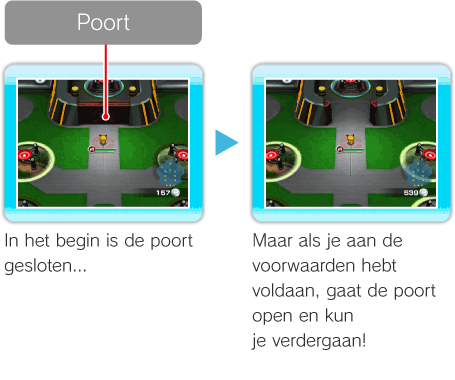

12 |
Terminal |
 |
|
Het scherm Terminal Je kunt een kaart van de Terminal bekijken en zien hoeveel
Dingen die je in de Terminal kunt doen Naast de Launch Pads (lanceerplatforms) om naar de Stages (levels) te gaan en de Battle Royale aan te gaan, kun je in de Terminal ook verschillende faciliteiten gebruiken.
Naar de Stages (levels) gaan Er zijn zes Stages (levels) per Rank (rang). Gebruik de Launch Pads (lanceerplatforms) in de Terminal om een Stage (level) te bereiken. Wanneer je een Stage (level) hebt voltooid, verschijnt er informatie naast het bijbehorende Launch Pad (lanceerplatform): het aantal keren dat de Stage (level) is voltooid, de Pokémon die je hebt ontmoet en de Pokémon waarmee je vriendschap hebt gesloten. De naam van Befriended (bevriende) Pokémon zijn gekleurd. Bij Pokémon die je nog niet hebt ontmoet, staat een
De Battle Royale aangaan Als je de Battle Royale wilt aangaan, moet je eerst vriendschap sluiten met een Pokémon die een Power (kracht) heeft (zie pag. 11, Weergave van details over Pokémon) met een waarde die hoger ligt dan het vereiste niveau. Wanneer je aan deze voorwaarde hebt voldaan, gaat de poort open en kun je de Battle Royale bereiken vanaf het Launch Pad (lanceerplatform) aan de andere kant. Als je wilt weten welk niveau Power (kracht) je Pokémon nodig heeft om aan de Battle Royale deel te nemen, ga je naar de poort.  Faciliteiten gebruiken Elke faciliteit heeft een andere functie. Je kunt bijvoorbeeld Pokémon rekruteren of nieuwe Moves (acties) leren. Als je een faciliteit wilt gebruiken, ga je er naartoe en druk je op
Pokémon wisselen Als je Pokémon wilt wisselen, druk je op |


 .
.
 om het Switch Menu (wisselmenu) te openen (zie pag. 11, Switch Menu (wisselmenu)).
om het Switch Menu (wisselmenu) te openen (zie pag. 11, Switch Menu (wisselmenu)).
 |
 |
 |